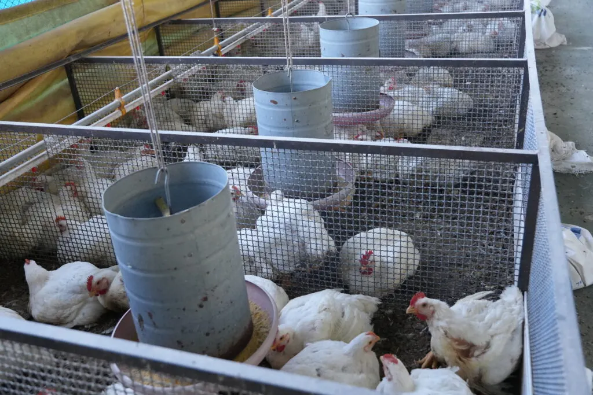
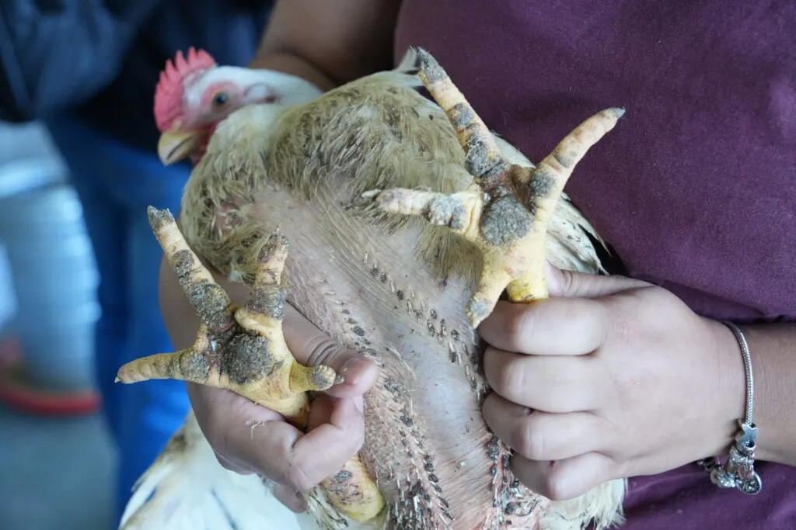
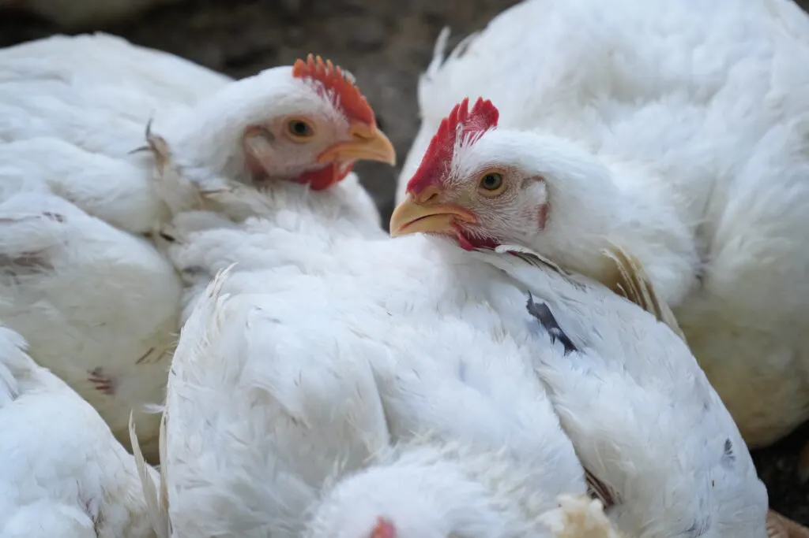

Por trás de um dos setores mais competitivos do agronegócio nacional existe um desafio silencioso que impacta produtividade, custos, bem-estar animal e segurança sanitária: a qualidade da cama aviária.
É justamente nesse cenário que a NanoBrasil desenvolve uma de suas principais apostas tecnológicas. Após anos de pesquisa e desenvolvimento, a empresa criou uma plataforma baseada em nanotecnologia capaz de atuar simultaneamente em diferentes fatores que afetam a cama aviária, oferecendo uma abordagem inédita para um problema que influencia toda a cadeia produtiva do frango de corte.

A tecnologia busca controlar, ao mesmo tempo, a umidade, a emissão de amônia, a proliferação de microrganismos e o desenvolvimento do cascudinho — um dos principais vetores de doenças na avicultura.
“Não estamos falando apenas de um novo insumo para granjas. Estamos falando de uma tecnologia capaz de elevar o padrão sanitário da produção, reduzir perdas e criar um novo paradigma para o manejo da cama aviária. O potencial de impacto é enorme para produtores, para a indústria e para a competitividade do Brasil no mercado internacional”, afirma Oscar Geigner, cofundador e diretor comercial da NanoBrasil.
O desafio invisível da avicultura
A cama aviária é formada por materiais como maravalha, casca de arroz e outros substratos vegetais utilizados para absorver umidade, proteger as aves e proporcionar conforto térmico ao longo do ciclo produtivo.
O problema é que, durante aproximadamente 42 dias, esse ambiente acumula fezes, restos de ração, água e matéria orgânica. Com isso, torna-se um local propício para a proliferação de bactérias, fungos, emissão de amônia e desenvolvimento do cascudinho (Alphitobius diaperinus).

Segundo Manuel Rodríguez, coordenador de Inovação e Desenvolvimento da NanoBrasil, a empresa percebeu que o desafio era muito maior do que o simples controle microbiológico.
“Começamos a estudar profundamente a cadeia avícola e entendemos que o maior desafio não era apenas controlar microrganismos, mas todo o ambiente da cama aviária. Foi justamente essa complexidade que chamou nossa atenção. Percebemos que existia uma oportunidade de desenvolver uma tecnologia que atuasse sobre vários desses problemas ao mesmo tempo.”
Quando a cama vira um risco sanitário
As consequências vão muito além do manejo diário das granjas. O aumento da umidade e da carga microbiológica favorece problemas respiratórios, pododermatites, redução do ganho de peso e pior conversão alimentar.
Em situações mais graves, esses fatores podem levar ao aumento da mortalidade dos animais, comprometendo diretamente a produtividade e a rentabilidade das operações.

Além disso, a presença de patógenos como a Salmonella pode exigir processos intensivos de limpeza e desinfecção, prolongando o vazio sanitário entre lotes e reduzindo a capacidade produtiva das granjas.
Para um setor que depende da manutenção de elevados padrões sanitários para acessar mercados internacionais, controlar esses fatores é uma questão estratégica.
Das soluções tradicionais a uma nova abordagem
O tratamento da cama aviária com cal virgem faz parte da rotina da avicultura há décadas e continua sendo uma das principais estratégias utilizadas para elevar o pH da cama e reduzir a sobrevivência de alguns microrganismos. Estudos mostram que a técnica é eficiente no controle de determinados patógenos, especialmente durante o vazio sanitário entre lotes.
Ao mesmo tempo, pesquisadores apontam que essa abordagem atua principalmente sobre aspectos específicos da cama aviária e pode perder eficiência ao longo do ciclo produtivo, à medida que aumentam a umidade e a carga de matéria orgânica. Além disso, o uso inadequado da cal pode provocar elevação excessiva do pH e até lesões nas patas das aves, exigindo manejo criterioso.
Foi justamente diante dessas limitações que a NanoBrasil direcionou sua pesquisa para uma tecnologia capaz de atuar simultaneamente sobre diferentes fatores que influenciam a qualidade da cama aviária.
Uma plataforma tecnológica multifuncional
Foi a partir dessa compreensão que nasceu a solução desenvolvida pela NanoBrasil.
Inicialmente, o projeto buscava criar uma alternativa mais eficiente para materiais antimicrobianos já utilizados pelo setor. Mas a evolução da pesquisa levou a empresa a uma abordagem muito mais abrangente.
“Ao invés de oferecer apenas um produto químico, passamos a desenvolver uma plataforma tecnológica baseada em nanocompósitos e substratos multifuncionais capazes de permanecer durante todo o ciclo produtivo”, explica Manuel.
A nanotecnologia é o elemento que permite reunir diferentes funcionalidades em um único material.
“Conseguimos controlar a distribuição dos ativos dentro da matriz secante, aumentando a área superficial disponível para interação com microrganismos, gases e umidade. Isso permite utilizar menores quantidades de material ativo, aumentar a eficiência e promover uma liberação mais controlada ao longo do ciclo produtivo.”
Segundo o pesquisador, o diferencial está justamente na integração de funções que hoje costumam ser tratadas separadamente.
“Não estamos desenvolvendo apenas um novo produto químico. Estamos desenvolvendo um ativo tecnológico multifuncional que atua simultaneamente no controle microbiológico, na adsorção de amônia, no controle da umidade e no potencial reaproveitamento do material ao final do ciclo. Essa integração simplesmente não existe nas soluções atualmente disponíveis no mercado.”
Resultados promissores
Os primeiros resultados observados durante o desenvolvimento indicam um cenário bastante promissor.
Os estudos demonstraram estabilidade dos materiais desenvolvidos, além de atividade antimicrobiana, capacidade de retenção de umidade e potencial para adsorção de amônia.

“Também observamos resultados bastante promissores em relação à atividade antimicrobiana, além da capacidade de retenção de umidade e potencial de adsorção de amônia.”
Atualmente, a tecnologia avança para etapas de validação em ambientes mais próximos das condições reais de produção, em parceria com universidades, centros de pesquisa e granjas especializadas.
Um diferencial para o maior exportador do mundo
O potencial da tecnologia ganha ainda mais relevância quando se observa o peso da avicultura para a economia brasileira.
Segundo a Associação Brasileira de Proteína Animal (ABPA), o Brasil exportou mais de 5,2 milhões de toneladas de carne de frango em 2024, mantendo a liderança mundial do setor e gerando quase US$ 10 bilhões em receitas.
Em um mercado altamente competitivo e dependente de rigorosos padrões sanitários, ganhos de biosseguridade podem representar vantagens estratégicas para toda a cadeia produtiva.
“O principal ganho é transformar o manejo da cama aviária em um processo mais eficiente e seguro. Esperamos melhorar significativamente as condições da cama durante todo o ciclo de criação, reduzindo a carga microbiológica, controlando a umidade e diminuindo a concentração de amônia no ambiente.”

Segundo Manuel, os impactos podem ser percebidos diretamente no bem-estar animal, no desempenho produtivo e na redução de perdas econômicas.
“Acreditamos que essa tecnologia possa representar uma mudança de paradigma na forma como a cama aviária é manejada no Brasil. Hoje, a maioria das soluções disponíveis atua de maneira pontual, tratando apenas um problema específico.”
ESG, fertilizantes e economia circular
Os benefícios não se limitam ao desempenho produtivo.
A tecnologia foi concebida também para gerar ganhos ambientais e fortalecer práticas alinhadas às exigências ESG cada vez mais presentes no agronegócio.
“Sob a perspectiva ambiental, a utilização de produtos de base mineral incorporados aos secantes pode trazer benefícios para o posterior uso da cama como fertilizante. Além de reduzir resíduos, a tecnologia agrega valor ao material após o uso e contribui para uma produção mais sustentável e alinhada às exigências dos mercados nacional e internacional.”
O resultado é uma solução que conecta biosseguridade, produtividade e sustentabilidade em uma única plataforma tecnológica.
Muito além da avicultura
Embora o foco inicial esteja na cadeia avícola, a NanoBrasil já enxerga aplicações futuras em outros segmentos do agronegócio.
O conhecimento gerado poderá ser adaptado para áreas como suinocultura, pecuária intensiva, controle de odores, materiais adsorventes e fertilizantes.
“Mais do que lançar um novo produto, nosso objetivo é introduzir um novo conceito tecnológico para o manejo sanitário na produção animal. O potencial vai muito além da avicultura e pode abrir espaço para uma nova geração de soluções sustentáveis de alta tecnologia para o agronegócio brasileiro.”

Para a NanoBrasil, o projeto representa não apenas uma oportunidade de mercado, mas também a possibilidade de demonstrar como a nanotecnologia pode resolver desafios concretos de um dos setores mais relevantes da economia nacional, fortalecendo a competitividade do agro brasileiro e criando novas oportunidades de inovação para toda a cadeia produtiva.